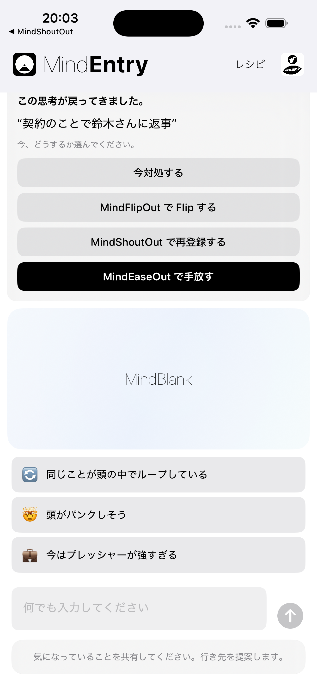
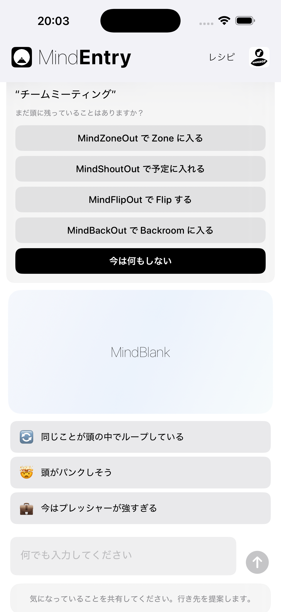

思考の摩擦が生まれる前に届く、静かなきっかけ。
MindPreCogは、MINDBEBOPのコンテキスト認識レイヤーです。
リマインダーが再び現れたとき、 朝が始まるとき、 就寝時間が近づくとき、 会議が始まろうとしているとき、 見慣れた状況が現れたとき、 あるいは繰り返されるパターンが形を作り始めたとき。 MindPreCogはそうした意味のある瞬間や繰り返し現れるパターンに気づき、 適切な構造的な選択肢を提示します。
「助けが必要だ」と自分で気づくのを待つのではなく、 MindPreCogは適切なタイミングで適切なツールをそっと差し出します。
分析もしません。解釈もしません。診断もしません。 思考の摩擦が大きくなる前に、それを和らげるための静かなきっかけを提供するだけです。
多くのアプリは、あなたが助けを求めるのを待ちます。 MindPreCogは、その前に構造を提示します。
こうした瞬間は、少し違う反応を選ぶための静かな機会になります。
コンテキスト認識型の提案。心を読むものではありません。
MindPreCogは、あなたの思考を分析しません。
代わりに、次のようなシンプルなシグナルに反応します。
こうした瞬間が訪れると、MindEntryが開き、その状況に最も適した次の一歩を提案できます。
それは思考をShoutすることかもしれません。 Flipすることかもしれません。 もう一度スケジュールすることかもしれません。 Backroomに入ることかもしれません。 Zoneすることかもしれません。 Releaseすることかもしれません。 レシピを作ることかもしれません。 CogniHackを始めることかもしれません。 あるいは何もしないことかもしれません。
朝になると、MindEntryは次のように尋ねることがあります。
今日、注意を向けたいことはありますか？
就寝前には、MindEntryは次のように尋ねることがあります。
明日のために今は脇に置いておきたいことはありますか？
会議の前には、MindEntryは次のように尋ねることがあります。
ドアの外に置いていきたいことはありますか？
同じリマインダーが何度も再スケジュールされている場合：
このリマインダーは何度も再び現れています。
MindEntryは、 MindShoutOut、 MindFlipOut、 MindZoneOut、 MindBackOut、 レシピ、 CogniHack、 または何もしないといった選択肢を提示することがあります。
思考の摩擦は、大きくなる前に少しだけ取り除かれます。
分析ではなく、静かな気づき。
MindPreCogは、リマインダー、レシピ、気を散らす要因、 状況、あるいは行動の流れが時間をかけて繰り返し現れていることに、 ときどき気づくことがあります。
それは何度も再び現れるリマインダーかもしれません。 繰り返し使われるレシピかもしれません。 繰り返される気晴らしかもしれません。 あるいは複数のMINDBEBOPツールにまたがる見慣れた流れかもしれません。
レポートは生成されません。 スコアも計算されません。 行動を評価することもありません。
その代わり、MindPreCogはときどき次のようなシンプルなメッセージを提示することがあります。
このパターンは繰り返し現れています。
目的は分析ではありません。 繰り返される思考の摩擦が再び表面化し続ける前に、 それに構造を与えることです。
MindPreCogは、意味のある瞬間や繰り返されるパターンに気づき、 必要に応じて構造を提示するだけです。


MindPreCogのプロンプトはMindEntry内に表示されます。
今後、MindPreCogはさらに多くのコンテキスト認識型プロンプトやパターンシグナルに対応する可能性があります。
多くのメンタルツールは反応型です。
問題に気づいてから、何をするかを決めます。
MindPreCogはその間隔を短くします。
思考の摩擦が大きくなる前に構造的な選択肢を提示し、 ときには繰り返されるパターンが持続的な摩擦になる前に気づくこともあります。
MindPreCogはあなたの心を理解しようとはしません。 少しだけ早く現れ、ときにはあなたより先にパターンに気づくだけです。
Copyright © 2026 MINDBEBOP — All rights reserved.